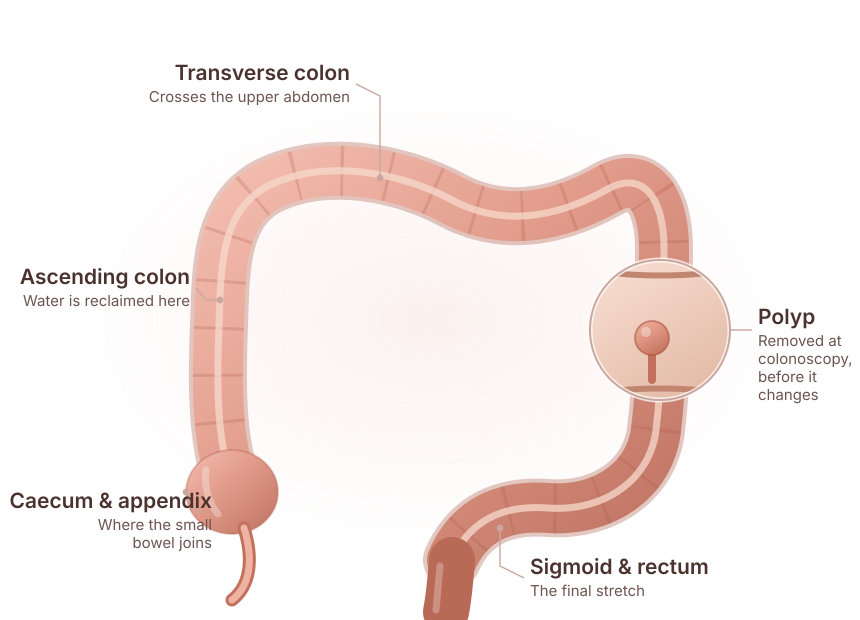

Blood in the stool
Bleeding, or dark stools, whether or not you also have piles.
Specialised evaluation, staging and surgical treatment planning for cancers of the colon and rectum, within a multidisciplinary plan.
Send your reports before you travel — they are reviewed ahead of the consultation.

Colorectal cancer begins in the lining of the large bowel — the colon, or the rectum in its last few inches. Most start as a small growth called a polyp, which may take years to change. That slow start is the reason screening and early assessment of symptoms matter so much.
Where the cancer sits changes what treatment looks like. Cancers of the colon are usually managed with surgery first, while cancers of the rectum often involve radiotherapy or chemotherapy before an operation, because of how little room there is in the pelvis.
Bowel symptoms are common and are usually caused by something benign. The point of an assessment is not to assume the worst, but to make sure that a change that has persisted is properly explained.
Colon cancer arises in the long, looping part of the large bowel that sits above the rectum. Because the colon is wide and has room around it in the abdomen, a tumour can grow for some time before it causes anything obvious — which is why the first sign is often a change in bowel habit, bleeding, or tiredness from slow blood loss rather than pain.
Assessment usually begins with a consultation and examination, followed by colonoscopy so the bowel lining can be seen directly and a biopsy taken. If cancer is confirmed, a CT scan of the chest, abdomen and pelvis is used to establish the stage before any treatment is decided.
For most colon cancers surgery is the first treatment, removing the affected segment together with its lymph node basin. Chemotherapy afterwards may be advised depending on what the pathology from that specimen shows. Whether it applies to you is a decision for the multidisciplinary team, taken once the report is available.
Every one of these steps is confirmed against your own investigations. None of it is a diagnosis made from this page.
Rectal cancer begins in the last few inches of the large bowel, inside the pelvis and close to the anal sphincter — the muscle that gives you control. Symptoms are often noticed earlier than with colon cancer: bleeding, a change in the calibre of the stool, or a persistent feeling that the bowel has not emptied.
Evaluation follows the same first steps — consultation, examination including a digital rectal examination, and colonoscopy with biopsy. Rectal cancer then adds an MRI of the pelvis, which shows how far the tumour extends and how close it lies to the surrounding structures. That distance is what decides whether treatment starts with an operation or with something else.
Because the pelvis leaves so little room, radiotherapy or chemotherapy before surgery is common in rectal cancer. Shrinking the tumour first can change what an operation is able to achieve, including whether the sphincter can be preserved. Where preserving it is oncologically safe, that is part of the plan; where it is not, it is explained to you beforehand rather than afterwards.
What applies in your case depends on the MRI and the biopsy, and is decided by the treating team with you.
Most people with these symptoms do not have cancer. A change that lasts more than a few weeks should still be looked into.
Bleeding, or dark stools, whether or not you also have piles.
Looser or more frequent stools, or new constipation, lasting more than a few weeks.
Losing weight without trying.
Fatigue or breathlessness, sometimes the first sign of slow blood loss.
Cramping, a feeling of fullness, or a lump you can feel.
A persistent sense of incomplete emptying after passing stool.
Colonoscopy with a biopsy establishes the diagnosis; CT and, for the rectum, MRI establish the stage. The order matters, because treatment depends on the stage.
Which tests apply to your case is a clinical decision made after you have been examined and your existing reports reviewed.
Your symptoms, their duration, and any family history of bowel cancer are discussed.
Abdominal examination, and examination of the rectum where appropriate.
The bowel lining is inspected directly and any suspicious area is sampled for the laboratory.
CT of the chest, abdomen and pelvis, with an MRI of the pelvis for rectal cancers, to establish the stage.
Findings are reviewed together so that surgery, chemotherapy and radiotherapy are sequenced correctly.
Treatment for colorectal cancer is decided on the site of the tumour, the stage, your general health and what the imaging and biopsy show. Surgery is central to treatment for most early and locally advanced disease, but it is rarely the only element.
For rectal cancer in particular, treatment before surgery can shrink a tumour and improve what an operation can achieve. For colon cancer, chemotherapy after surgery may be advised depending on what the pathology shows.
No single pathway fits every patient. Where treatment should start, and in what order, is a decision for the treating team together with you.
No procedure is promised in advance of an assessment. What is appropriate for you is decided after examination and a review of your investigations.
Colorectal cancer surgery removes the segment of bowel containing the tumour along with its lymph node basin, and then restores continuity of the bowel where that is safe and appropriate. The named operation depends on which part of the bowel is involved.
A stoma is sometimes needed — occasionally permanently, more often temporarily to protect a new join while it heals. Whether one is likely in your case is discussed before surgery, not after.
Whether surgery comes first is a team decision, not a single opinion.
No operation is planned before the imaging and pathology are complete.
Where it is oncologically safe, preserving function is part of the plan.
A written surveillance schedule after treatment, not ad-hoc review.

Pancreato-Biliary & Gastrointestinal Surgery
Dr. Deeksha Kapoor is a pancreato-biliary and gastrointestinal surgeon with training in advanced surgical oncology and minimally invasive surgery, from institutions in India, Japan, Germany and France. She leads the PancreaCare+ programme at Advitya Healthcares.
Colorectal cancer surgery is judged on the quality of the resection and the accuracy of the staging that precedes it. Both are core to a GI surgical oncology practice, and both are what a specialist unit is for.
From the first consultation through to follow-up, so you know what each stage involves before you commit to it.
Symptoms, their duration, family history, and any colonoscopy already performed.
Direct inspection of the bowel lining with tissue taken from anything suspicious.
CT of chest, abdomen and pelvis; MRI of the pelvis for rectal tumours.
Surgery, chemotherapy and radiotherapy sequenced by the team, with the reasoning explained to you.
Resection of the affected segment with its lymph node basin, and reconstruction where appropriate.
Pathology discussed, adjuvant treatment considered, and a surveillance schedule set out.
Advitya Healthcares works through alliance partners in Ranchi, Khunti and Kolkata, so treatment is delivered close to home wherever possible.
Usually not — piles and fissures are far more common causes. But bleeding should not be assumed to be piles without an assessment, particularly over the age of 40 or if it is new for you.
Colonoscopy with a biopsy confirms the diagnosis. CT and, for rectal cancers, MRI are then used to establish the stage before treatment is planned.
Both start in the large bowel, and the difference is where. Colon cancer is higher up, in the long looping part; rectal cancer is in the last few inches, inside the pelvis. That position changes the treatment — colon cancer is usually operated on first, while rectal cancer often has radiotherapy or chemotherapy beforehand because of how little room the pelvis leaves.
Not everyone does. Many colon operations are completed with the bowel joined back together. A temporary stoma is more common in rectal surgery to protect the join. Your surgeon will tell you what is likely in your case beforehand.
No. Rectal cancers often receive radiotherapy or chemotherapy first. The sequence is decided by the multidisciplinary team based on the stage and the imaging.
In many cases, yes, and it is offered where it is oncologically appropriate. Tumour size, position and previous surgery all influence the decision.
A schedule of clinical review, blood tests, imaging and colonoscopy is set out for you, usually continuing for several years.
Colonoscopy and biopsy reports, CT or MRI scans on disc where available, previous discharge summaries, and a list of your current medicines.
If a colonoscopy has already shown something, bring the report and the scans. The consultation can then be about the plan rather than about repeating tests.
Medical disclaimer. The information provided on this page is for educational purposes only and should not be considered a substitute for professional medical advice, diagnosis or treatment. Treatment options may vary depending on individual clinical evaluation.